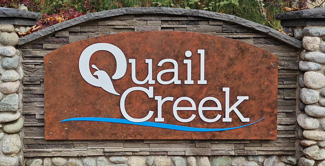

As we move into the fall season, the Board would like to thank all residents for helping make Quail Creek a wonderful place to call home. This newsletter provides updates on Board activities, introduces new Board members, highlights community resources, and shares important reminders. We hope you find the information helpful and informative. Thank you for being part of Quail Creek.
Please join us in welcoming the newest members of the QCHOA Board:
Thank you to all homeowners who attended the Association's Annual Meeting. During the meeting, homeowners approved the prior meeting minutes and received an update on the Association's finances. The Association is projected to finish 2026 with an estimated surplus of approximately $3,300. Homeowners also approved the 2027 budget, setting annual dues at $418. In addition, members approved a measure to limit future budget increases above the approved budget to no more than $2,000 per year.
Residents are reminded that Architectural Control Committee (ACC) approval is required before commencing exterior improvements or modifications to a home. Projects requiring approval include, but are not limited to, fencing, sheds, painting, landscaping, roofing, and other visible exterior changes.
The ACC review process helps ensure that proposed projects are consistent with our governing documents and community standards. Obtaining approval before beginning a project can help avoid potential delays, compliance issues, and unnecessary expenses.
The Board would like to recognize and thank the many homeowners who take the time to submit ACC applications before starting their projects. Your commitment to following the established process demonstrates consideration for your neighbors and helps preserve the beauty, character, and property values of our community.
Do we have your current contact information? Accurate records help the Board communicate important community updates, meeting notices, and neighborhood announcements. To confirm or update your contact information, please email qchoaboard@outlook.com. Thank you for helping us stay connected with our residents.
One of the greatest strengths of Quail Creek is neighbors helping neighbors. The Community Support Network connects residents who may need occasional assistance with neighbors willing to lend a helping hand.
Whether it's spreading bark, mowing a lawn, pulling weeds, moving light items, or helping with other small outdoor tasks, volunteers can make a meaningful difference for fellow residents who may be unable to complete these activities on their own.
If you would like to request assistance or volunteer your time, please contact the board at qchoaboard@outlook.com. Together, we can continue to build a caring and connected community.
Up to this point, the board has not taken an active role in reviewing or approving signage placed at our front entrance. After questions from homeowners and a review of our CC&R's, we discussed this issue with homeowners at our annual meeting. There was broad agreement that additional clarification would be beneficial to ensure a consistent understanding of the signage requirements throughout the community.
Going forward, any sign placed at the front entrance must secure board approval after a written request describing the signage. See our new QCHOA Signage Request Form for the new process. Feel free to send us any questions you might have about this new process.
Please contact the board at qchoaboard@outlook.com.